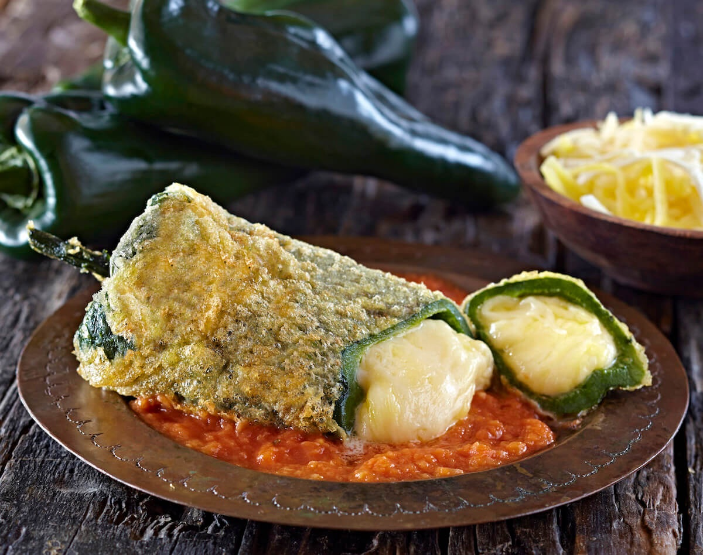

Chiles Rellenos
Description
This Dish has been a childhood nightmare,
but once I my pallet matured I felt the delicious
taste i have been missing all along.
Ingredients
- 6 fresh Anaheim chile peppers
- 1 (8 ounce) package queso asadero
(white Mexican cheese), cut into 3/4-inch
thick strips
- 2 large eggs, separted
- 1 teaspoon baking powder
- 3/4 cup all-purpose flour
- 1 cup vegetable shortening for frying
Directions
Step 1
- Preheat the oven broiler; set the oven rack
about 6 inches below the heat source.
Line a baking sheet with aluminum foil.
Step 2
- Place peppers onto the prepared baking sheet and
broil until skins are blackened and blistered,
about 10 minutes. Use tongs to rotate peppers
often to char all sides.
Place blackened peppers into a bowl and
tightly seal with plastic wrap.
Allow peppers to steam as they cool,
about 15 minutes.
Step 3
- Remove skin from peppers, then cut a slit
down the long side of each one to remove seeds
and core. Rinse peppers inside and out and pat
dry with paper towels. Stuff peppers with
strips of cheese
Step 4
- Whisk egg yolks and baking powder in a bowl until
combined. Beat egg whites with an electric mixer in a
separate bowl until stiff peaks form. Gently fold beaten
whites into the yolk mixture. Place flour into a separate
shallow bowl.
Step 5
- Melt vegetable shortening in a skillet over medium heat.
Roll each stuffed pepper in flour, tap off excess flour,
and dip into the egg mixture to coat both sides.
Gently lay coated peppers into the hot shortening.
Fry peppers until lightly golden brown and cheese has
melted, about 5 minutes per side.